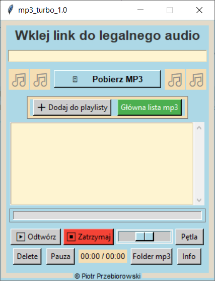

▶️ Główna playlista:
- Po uruchomieniu programu wyświetli się główna playlista,
na którą będą pobierane utwory. - Zaznacz wybraną piosenkę z listy.
- Kliknij „▶ Odtwórzâ€.
- Po zaznaczeniu wybranej piosenki, program automatycznie odtworzy ją
oraz wszystkie kolejne utwory znajdujące się poniżej na playliście. -
Możesz załadować pliki MP3 z dysku do aplikacji:
– Kliknij w aplikacji â€Folder MP3†– to Twój folder poÅ‚Ä…czony z aplikacją.
– Przeciągnij do tego folderu pliki MP3 ze swoją muzyką z komputera.
– Po odświeżeniu „Głównej listy MP3” piosenki pojawią się w głównej liście aplikacji.
â Aby dodać do ulubionych:
- Zaznacz utwór i kliknij „➕ Dodaj do ulubionychâ€.
- Wybierz numer playlisty od 1 do 4
„🎧 Moje ulubione playlisty są ukryte w interfejsie
– możesz je wyświetlić, klikając jedną z czterech ikonek nutek..
🗑️ Usuwanie plików:
- W trybie mojej playlisty – przycisk „🗑️ Delete†usuwa piosenkę tylko z ulubionych.
- W trybie listy głównej – usuwa plik również z dysku po potwierdzeniu.
🔠Odtwarzanie w pętli:
- Przycisk â€Pętla†zapętla tylko wybrany utwór.
- Bardzo ciekawą funkcją opcji â€pętliâ€
- Jeśli podczas odtwarzania piosenki klikniesz ikonę pętli
i zaznaczysz inną piosenkę, zostanie ona odtworzona jako kolejna po bieżącej.
📊 Pasek postępu:
- Wyświetla czas trwania utworu w trakcie odtwarzania.
- Kliknij w pasek, aby przewinąć do dowolnego miejsca w piosence.
📸 Zrzuty ekranu aplikacji

🛡️ Zgodność z polskim prawem – dozwolony użytek osobisty
Zgodnie z art. 23 ustawy o prawie autorskim i prawach pokrewnych (Dz.U. 1994 nr 24 poz. 83),
wolno nieodpłatnie korzystać z już rozpowszechnionego utworu bez zezwolenia twórcy
w zakresie własnego użytku osobistego.
Oznacza to, że użytkownik ma prawo do pobierania i przechowywania utworów
(np. muzyki, filmów, nagrań) na swoim urządzeniu wyłącznie na własne potrzeby – pod warunkiem,
że nie udostępnia ich publicznie ani nie rozpowszechnia dalej.
◠Należy jednak pamiętać, że niektóre serwisy (np. YouTube, SoundCloud)
mogą w swoich regulaminach zabraniać pobierania treści
– nawet w przypadku, gdy takie pobieranie jest dopuszczalne przez polskie prawo.